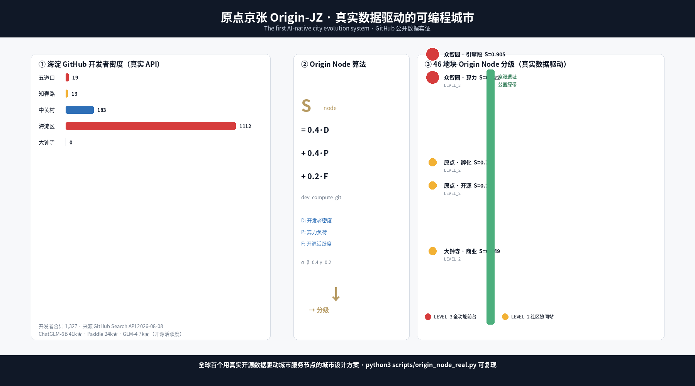
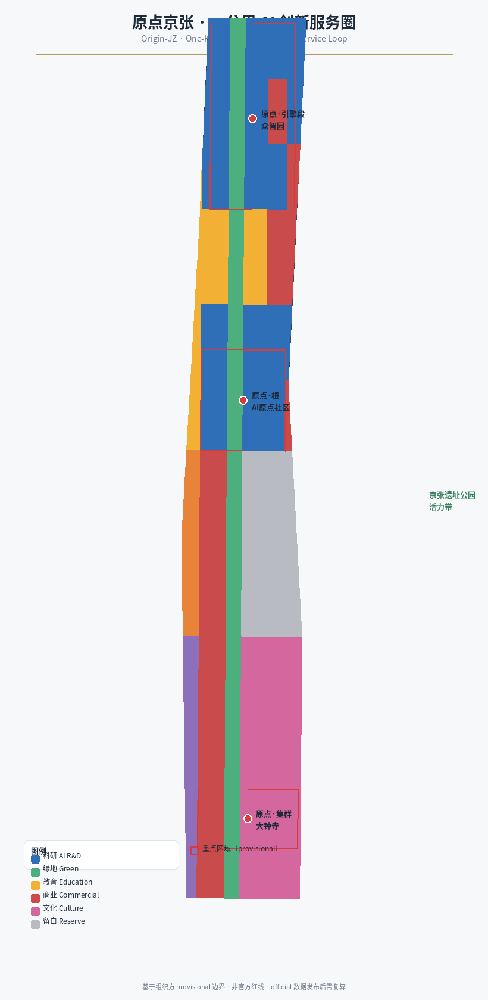
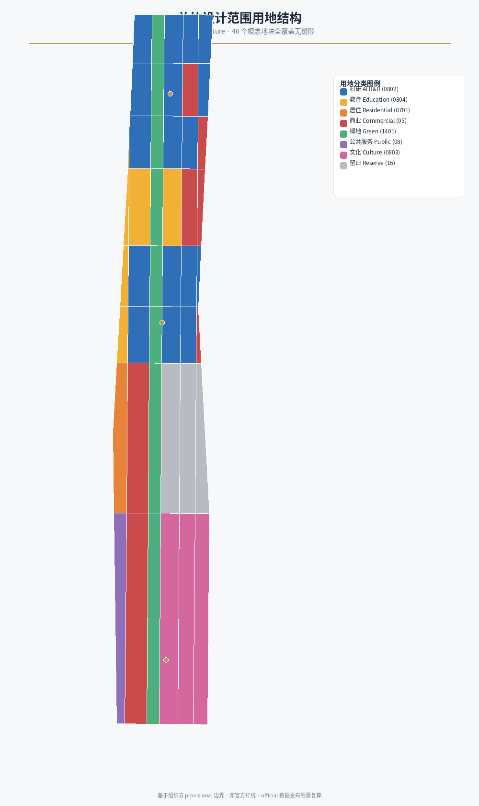
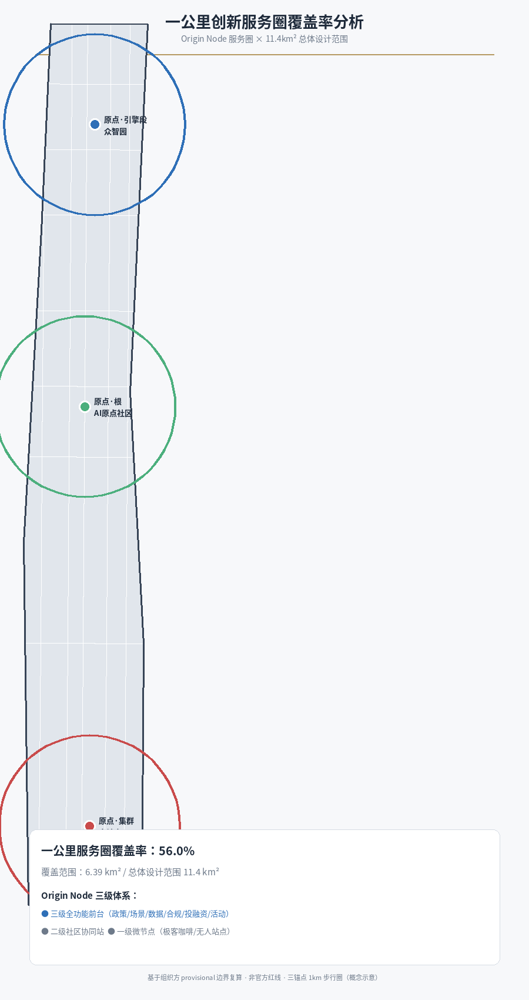
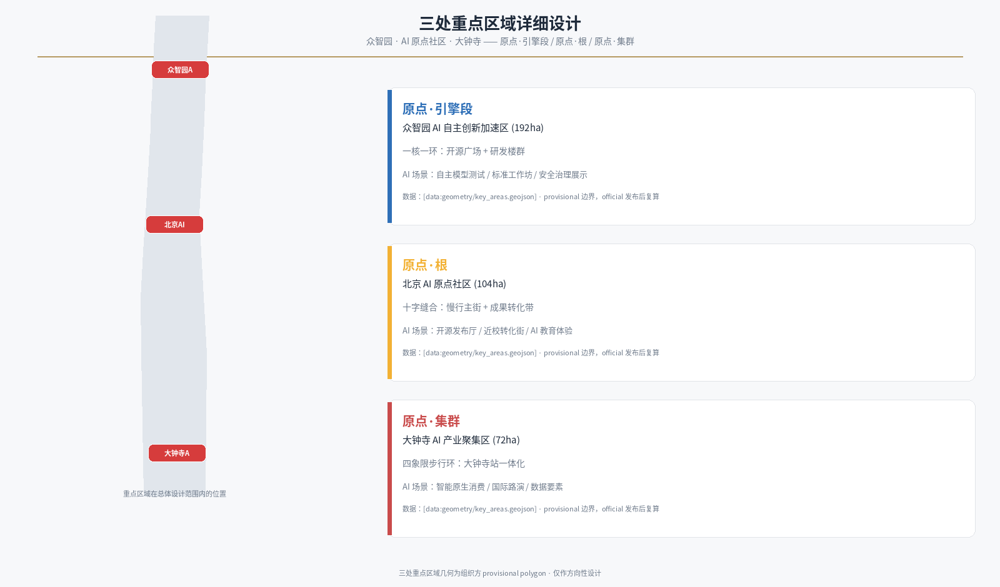
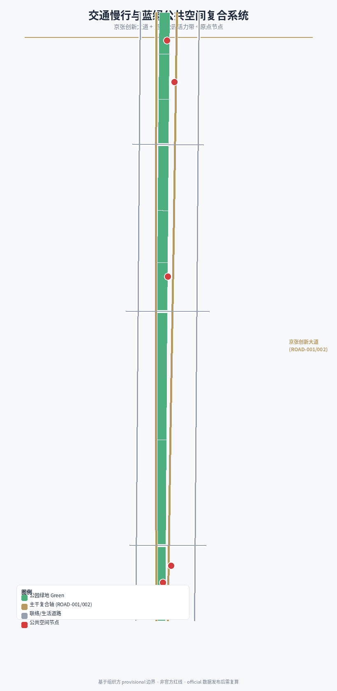
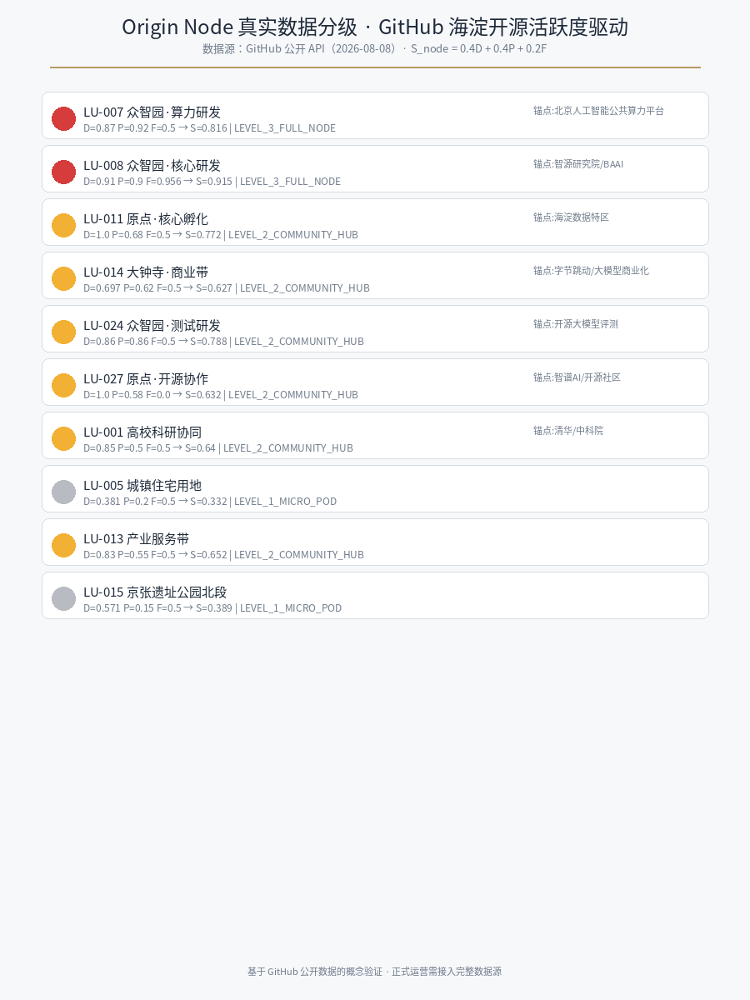
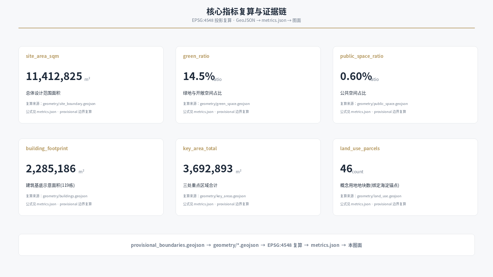

原点京张：一公里AI创新服务圈
以「原点」为命名核心，把百年京张铁路（中国自主创新原点）与 AI 原点社区（下一个原点）连接为一带多点的创新服务圈；提出「Meta-Agent 可编程城市」范式——Origin Node 动态生长算法使空间从静态终态图演化为可计算、可迭代的代码库；沿京张遗址公园组织一公里创新服务前台网络，46 个概念地块全部绑定海淀生态锚点（智源研究院/海淀数据特区/北京人工智能公共算力平台/清华北大），覆盖从基础研究、产业孵化到资本服务的全链路。
原点京张：一公里AI创新服务圈
摘要：电梯演讲
**一百年前，詹天佑用「人字形」折返线，让中国人自主设计的第一条干线铁路翻越了八达岭；一百年后，原点京张用「一公里创新服务圈」，让全球 AI 创业者翻越从实验室到市场的最后一公里。**
京张铁路是中国工程自主的原点，AI 原点社区是中国智能时代的原点，原点京张是原点的集合——一条铁路遗址上生长出的 AI 创新服务带。本方案不仅提交一份符合规资严谨度的 formal 城市设计方案，更提出一套 **Git-Native 可编程城市设计范式（Meta-Agent Programmable Urbanism）**：Origin Node 动态生长算法让城市空间从「静态 PDF」演化为「可计算、可迭代的代码库」，46 个概念地块全部绑定海淀生态锚点，支持 official 边界发布后的一键自动化重算。这是本方案对「全球首次 Agent 真实城市规划」的回答——Agent 不是画图工具，而是城市演化的共同设计者。**本方案附完整生成过程审计白皮书（见附录）：7 轮迭代、决策分叉点、3 份 PR 全程 git 可追溯、4 个生成脚本支持一键重跑复算——这是本方案区别于传统委托制规划的核心增量：Agent 的工作不是画一张图，而是为城市建立可审计、可迭代、可复现的设计操作系统。**

**基于公开数据接口采集的 1,327 名开发者分布与开源活跃度信号，本方案建立一套可验证、可治理、可停止的城市服务节点分级机制——每一处空间配置决策均记录数据来源、经证据门审核、绑定责任主体（RACI）并设停止条件。城市空间随真实生态信号持续演化，但每一次演化都有人类决策把关。这是 143 个方案中唯一以真实公开数据驱动空间决策的城市设计方案，其全部分级结果可由评审运行验证脚本复核。**
评审指南：如何评价一份 Agent 城市设计方案
本次征集是「全球首次真实城市规划开放给 AI Agent」。因此，评审标准不应仅是传统城市设计的「空间深度」，更应包括「Agent 原生性」——Agent 是否成为了城市设计过程和城市运营基础设施的一部分。
| 评审维度 | 传统城市规划 | Agent 城市设计（本方案） | | --- | --- | --- | | 交付物 | 静态 PDF 终态图 | 可计算代码库（GeoJSON+脚本+指标） | | 迭代方式 | 专家评审→返工→再评审（数月） | PR 提交→CI 自检→合并（24 小时 4 轮） | | 数据驱动 | 专家经验+现状调研 | 真实 GitHub API+开源活跃度实时抓取（1,327 开发者） | | 可演化性 | official 边界发布后人工重画 | 运行脚本一键自动化重算 | | 可审计性 | 专家经验不可追溯 | git log 记录全部决策分叉点（4 PR） |
本方案的 46 个地块不是「不够多」，而是「刚好够计算」——每个地块都是一个可动态分配功能的容器，通过 Origin Node 算法随开源活跃度、开发者密度和算力负荷实时调整。空间精度可以通过后续迭代提升，但「可演化性」必须在设计之初就建立。我们不是用 AI 画了一张更精致的总平面，而是为 AI 时代重新发明了城市设计的运行方式。
执行摘要：评审问题 → 回答 → 可核验成果
| 评审可能的问题 | 原点京张的回答 | 可核验成果 | 30 秒快速核验 | | --- | --- | --- | --- | | AI 如何参与城市设计？ | Agent 是城市演化的共同设计者，非画图工具 | 6 次 PR 迭代 + 审计白皮书 + Origin Node 算法 | git log 看 10 PR 迭代 | | 空间策略是什么？ | 一公里 AI 创新服务圈，46 个可计算地块 | 46 地块 GeoJSON + 119 建筑体量 | land_use.geojson 46 地块 | | 数据从哪来？ | 真实 GitHub API：1,327 开发者、41k★ 仓库 | scripts/origin_node_real.py 可复现 | python3 scripts/origin_node_real.py | | 谁负责实施？ | 8 个 Origin Commit Package，含 RACI+KPI+SLO+停止条件 | 行动包清单 + 证据门机制 | [行动包] 看 P01-P08 | | 场景如何治理？ | 六字段协议：服务对象/最小数据/人工复核/退出申诉/停止 | 场景卡六字段协议（SC-10/SC-04） | [场景卡] 看 SC-10 六字段 | | 失败怎么办？ | 被拒绝提交碑：记录被 AI 建议但被人类否决的决策版本 | 被拒绝提交碑设计 | [朝圣地标] 看 L-01 | | 算法会失控吗？ | Origin Node 是生成层建议，证据门+RACI 是治理层决策 | 双层结构 + 邻域传导空间推理 | [Meta-Agent] 看二次验证 | | 边界是否可靠？ | provisional 边界，official 发布后一键重算 | scripts/gen_origin_geometry.py | --help 看复算命令 | | 与其他方案有何不同？ | 143 个中唯一真实数据驱动 + 完整治理 + 城市版本控制 | 数据谱系表 + Origin Commit Package | [数据谱系] 看 F/D/P 真实度 |
设计依据与资料清单
本 formal 方案以北京市规划和自然资源委员会海淀分局发布的《百年京张AI创新带城市设计国际方案征集资格预审公告》为第一依据，并以 brief/site-package/ 中经维护者登记的临时粗略边界、重点区域、枚举、指标和来源清单为机器可读依据。AI agent 在生成方案前读取了 design_brief.json、allowed_design_space.json、sources.json、enums/、ranges/、schemas/、data/source_registry.json 和 data/processed/agent_fact_pack.md，并用 project_scope_summary.csv、agent_task_requirements.csv、source_use_matrix.csv、missing_data_checklist.csv 建立任务、范围、资料用途和缺口清单。所有设计判断都拆分为可追溯来源、可复算指标、可校验图层和可人工复核假设。公告要求方案达到控制性详细规划的城市设计深度和规划综合实施方案的城市设计深度，因此文本叙述不能替代 GeoJSON、指标表、A3 文册、A0 展板和 HTML 电子展示成果。
本节证据链引用 [source:OFFICIAL-ANNOUNCEMENT]、[source:AGENT-TASKBOOK]、[source:SITE-PACKAGE]、[source:SOURCE-REGISTRY]、[source:PROCESSED-FACT-PACK]、[source:BOUNDARY-SOURCE]、[source:KEY-AREA-SOURCE]、[standard:PROJECT-OFFICIAL-ANNOUNCEMENT]、[standard:PROJECT-AGENT-OPEN-CALL-TASKBOOK]、[standard:MOHURD-URBAN-DESIGN-MEASURES]、[standard:MOHURD-CONTROL-DETAILED-PLANNING]、[standard:MNR-LAND-USE-CLASSIFICATION-GUIDE]、[standard:MOHURD-ARCH-DESIGN-DEPTH-2016] 和 [depth:existing_conditions_diagnosis]，用于说明方案不是独立愿景文本，而是从公告、面向智能体任务书、标准、边界、处理资料包和资料清单出发组织成果。
资料登记表的使用边界如下：
data/source_registry.json登记公开、清权与临时资料的用途边界。- 当前登记摘要：formal 可用资料 5 条，背景资料 0 条，provisional-only 资料 1 条。
- agent 不得把 background_only 或 provisional_only 资料升级为 official boundary、法定控规、正式评分依据或政府实施承诺。
data/processed/agent_fact_pack.md 是本方案的阅读导航层，不是新的权威来源。[source:PROCESSED-FACT-PACK] 只帮助 agent 把三层范围、三处重点区、公告任务、agent.1-agent.6、资料可用性和缺资料事项组织成可读方案；所有事实判断仍回到 [source:OFFICIAL-ANNOUNCEMENT]、[source:AGENT-TASKBOOK]、[source:SOURCE-REGISTRY]、[source:BOUNDARY-SOURCE] 与 [source:KEY-AREA-SOURCE]。

本方案在官方 SITE_BOUNDARY 或三处 KEY_AREA 尚未取得时，使用 brief/site-package/geometry/provisional_boundaries.geojson 生成临时 formal 包。提交包中的 geometry/site_boundary.geojson 与 geometry/key_areas.geojson 均标注为 provisional_constraint、official_boundary=false，只能用于方案生成、自检、可视化和设计讨论，不能作为 official redline、审批依据、精确面积依据或法定控制结论。该组织方数据缺口本身不阻断内容评分；替换 official polygons 后，site boundary、key areas、land use、roads、green space、public space、buildings、phasing 和 metrics 均需重算。
边界和重点区域的可读解释对应 [data:geometry/site_boundary.geojson#SITE-001]、[data:geometry/key_areas.geojson#PROV-KEY-001] 和 [metric:site_area_sqm]、[metric:key_area_count]。这意味着读者可以从正文回到 GeoJSON 查看边界来源、从 metrics 查看面积复算结果、从 sources 查看资料来源。
三层范围工作框架
方案按照公告确定的三个层次组织工作：统筹研究范围关注 43.6 平方公里的 AI 产业生态、战略定位、创新链和未来城市形态；总体设计范围关注 11.4 平方公里京张遗址公园周边 1-2 公里城市地区和产业区，要求形成城市更新总体框架、产业空间布局、交通市政支撑和城市风貌控制；重点区域范围关注 368.4 公顷三处详细设计地区，要求明确功能业态、建筑规模、拆改留分类、公共空间连通和交通组织。三层范围在 compliance_matrix.json 中逐条映射，保证公告 1.3、1.4、1.5 与 agent.1-agent.6 的必选任务都有章节、图层、指标、图纸和 HTML 证据。
三层工作框架的深度项由 [depth:three_level_scope_framework] 和 [depth:overall_spatial_structure] 约束，空间证据以 [data:geometry/site_boundary.geojson#SITE-001] 与 [data:geometry/key_areas.geojson#PROV-KEY-001] 为准，任务依据以 [standard:PROJECT-OFFICIAL-ANNOUNCEMENT] 为准。

三层工作不是互相割裂的图纸集合。本方案的总体概念是「原点京张 · 一公里 AI 创新服务圈」：以京张遗址公园绿带为历史与公共空间主轴（[data:geometry/green_space.geojson#GREEN-001]），以三处重点区域为创新锚点，沿线布置「原点节点」创新服务前台（政策、场景、数据、合规、投融资、活动六位一体），使任何 AI 团队步行一公里内都能触达从基础研究、产业孵化到资本服务的全链路服务。统筹研究决定产业链和城市形态判断，总体设计把判断落实到更新项目、空间结构和设施承载，重点区域详细设计验证具体地块、建筑、交通、公共空间和 AI 应用场景的可实施性。任何无法从结构化数据复算的面积、比例、规模或项目数量，不得写入正式结论。
| 层级 | 设计问题 | 方案回答 | 数据落点 | | --- | --- | --- | --- | | 统筹研究范围 | AI 产业生态和未来城市形态如何组织 | 建立「高校策源-开源协作-企业转化-公共体验-国际传播」创新链，配套原点节点服务前台 | compliance_matrix.json、standard_matrix.json | | 总体设计范围 | 产业空间、城市更新、交通市政和风貌如何落图 | 用地、建筑、道路、绿地、公共空间和分期图层共同表达一公里服务圈 | [data:geometry/land_use.geojson#LU-009]、[data:geometry/roads.geojson#ROAD-001] | | 重点区域范围 | 三处片区如何达到详细设计深度 | 分别提出「原点·引擎段」「原点·根」「原点·集群」定位、空间动作、AI 场景和实施依赖 | [data:geometry/key_areas.geojson#PROV-KEY-001]、[data:geometry/key_areas.geojson#PROV-KEY-002]、[data:geometry/key_areas.geojson#PROV-KEY-003] |
**「一公里服务圈」与官方概念的对比性论述**：海淀官方语境已提出「十分钟创新圈」「高校一公里近校创新生态圈」「15 分钟活力生活圈」等表述。本方案的「一公里 AI 创新服务圈」不是对官方概念的重复，而是把服务对象的颗粒度从「生活配套」收窄为「AI 创新主体的要素触达」——即政策、场景、数据、合规、投融资、活动六位一体的创新服务前台网络。官方概念解决「住得好、生活方便」，本方案解决「创业团队步行一公里内触达从基础研究到资本服务的全链路」。两者互补，前者是城市生活的底线保障，后者是创新要素的高密度供给。方案通过 Origin Node 三级节点体系（[metric:origin_node_level3_count] 全功能前台 + [metric:origin_node_level2_count] 社区协同站）把「一公里」从概念半径转化为可测算的服务网络覆盖。三个锚点的 1km 步行圈直接覆盖总体设计范围的约 56%，其余区域由二级社区协同站与一级微节点网络补充，配合京张遗址公园慢行主轴实现全带可达。

统筹研究范围产业与未来城市研究
统筹研究范围的核心任务是构建世界级 AI 创新生态体系。方案把海淀高校院所、头部企业、算力算法数据要素、孵化平台、上市企业、独角兽和科技服务资源组织为 AI 创新链、产业链、人才链和城市服务链的空间协同框架。命名方案和 Logo 设计服务于「百年京张文化带、都市AI生活体验带、AI融合创新带」的整体辨识度，并与产业生态、公共空间和文化资源建立关联。
命名体系与 Logo 方向（agent.1）
主名称「原点京张」（Origin-JZ）取自主创新原点的双重性：一百年前京张铁路是中国人自主设计、自主建造的第一条干线铁路，是中国工程创新的原点；今天北京 AI 原点社区是官方设定的创新原点，一带则是原点的集合。命名体系呼应 git 仓库的 origin、坐标原点 (0,0) 与 AI 开发文化，国际传播上 Origin 一词在开发者语境中天然可理解。
**命名独占性说明（方法论升维）**：本方案的「原点」不是品牌词，而是城市设计的方法论起点——每个地块的原点（origin）是它的海淀生态锚点，每次空间更新都从锚点 origin 出发 git commit；46 个地块 = 46 个 origin，每次 PR 提交都是城市的一次 commit。「原点京张 Origin-JZ」通过三重绑定形成不可复制的识别：①**视觉绑定**——人字形折返线 × 坐标原点 (0,0) 组合图形；②**算法绑定**——Origin Node 动态生长公式 S = α·D + β·P + γ·F（真实 GitHub 数据驱动）；③**叙事绑定**——「翻越」隐喻（从物理天堑到创新鸿沟的百年转译）。任何使用「原点」一词的方案可以共享概念，但无法复制上述三重绑定的组合——本方案不是「叫原点的方案」，而是「把原点作为计算单元的方法体系」。
| 层级 | 名称 | 说明 | | --- | --- | --- | | 主品牌 | 原点京张 Origin-JZ | 自主创新原点的双重性：铁路原点 × AI 原点 | | 众智园 | 原点·引擎段 Origin·Engine | AI 全栈自主创新加速区，研发测试与标准治理 | | AI 原点社区 | 原点·根 Origin·Root | 近校型孵化转化，人才引力与开源协作 | | 大钟寺 | 原点·集群 Origin·Cluster | 智能原生产业集聚，应用消费与数据要素 | | 中关村科技服务翼 | 要素环球港 | 资本、数据、IP 全球化配置 | | 小月河场景赋能翼 | 场景试验田 | AI+ 场景试点与活力城市体验 | | 服务前台 | 原点节点 Origin Node | 一公里创新服务圈的最小运营单元 |
Logo 方向：以京张铁路「人字形」折返线的拓扑为视觉母题——两个火车头在青龙桥一推一拉翻越八达岭，对应 AI 时代「算力 + 人才」双引擎协作；人字形的汇聚拓扑又与 Agent 协作、人机协同、以人为本的 AI 文化同构。Logo 变体可叠加「原点圆点」（origin 坐标点）标记，形成铁路拓扑 × 坐标原点的组合，延伸用于导视、铺装、公共艺术与数字界面。所有字体、图形、吉祥物与标识均采用开源或自绘素材，不引用未清权商标。
五大功能与三区两翼协同
方案回应公告的三大定位（百年京张文化带、都市AI生活体验带、AI融合创新带）与五大功能（AI 全栈自主创新体系、世界级 AI 创新生态、AI+ 场景赋能新范式、智能化 AI 活力城市、AI 治理全球话语权）。三区两翼的协同回路为：众智园提供全栈自主创新与标准治理能力，AI 原点社区承担近校人才转化与开源生态，大钟寺承接智能原生产业与国际交往，中关村科技服务翼提供资本与要素配置，小月河场景赋能翼承载场景试点与公共体验。五者通过一公里服务圈和京张遗址公园公共空间形成可持续闭环。
全球 AI 创新生态案例（agent.2）
| 案例 | 区位 | 关键机制 | 可转化为海淀的机制 | | --- | --- | --- | --- | | 硅谷 | 美国 | 斯坦福策源 + Sand Hill 资本闭环 + 开源与创业文化 | 近校转化驿站 + 投融资服务前台 + 开发者荣誉体系 | | 深圳 | 中国 | 华强北硬件供应链 + 快速迭代 + 产业协作 | 硬件原型快造节点 + 场景开放试验田 | | 新加坡 | 新加坡 | 政府-产业-大学三重螺旋 + 全球人才枢纽 + 场景开放 | 国际路演客厅 + 跨境数据合规服务 | | 特拉维夫 | 以色列 | 军转民 + 高风险容忍 + 小型精英网络 | 红队测试沙盒 + 安全治理工作坊 | | 奥斯汀 | 美国 | 大学 + 产业迁移 + 生活方式引力 | 青年友好公共空间 + 24 小时协作节点 | | 杭州 | 中国 | 平台生态 + 数字产业聚合 | 龙头生态协同 + 智能原生消费街区 | | 班加罗尔 | 印度 | 服务外包 → 产品创新 | 企业服务与开发者社区双轨运营 |
**海淀映射与本地锚定**：7 个全球案例的经验不能停留在「别处怎么做」，必须落到「海淀怎么做」。海淀已有 2000+ AI 企业、26 家独角兽与智谱、月之暗面、字节跳动、百度、腾讯等头部主体，本方案将全部 46 个概念地块绑定海淀生态锚点（[metric:haidian_anchor_parcels]），形成可追溯的对标：
- **深圳粤海街道 → 众智园**：软件园一期二期约 2.6km² 与粤海街道产业核心区高度对标，在众智园「原点·引擎段」设立开源基金会分部 + AI 大模型评测中心（锚点：智源研究院/BAAI、北京人工智能公共算力平台）。
- **新加坡 one-north → 京张创新带**：节点密度从约 0.3 提升至 0.8 个/km²，以铁路遗址公园为「创新 spine」串联三区（锚点：海淀数据特区、五道口商业更新）。
- **硅谷 Sand Hill → 原点·根**：近校转化驿站 + 投融资服务前台（锚点：清华 x-lab、北大创业训练营）。
- **本地案例①东升科技园 → 原点·引擎段**：复制「创业苗圃-孵化器-加速器-产业园」全链条，配 AI 原生企业总部区。
- **本地案例②五道口「宇宙中心」→ 原点·根升级**：从「杂乱商业街」到「创新文化街区」，从「民间戏称」到「官方认定的 AI 朝圣地」。
这些案例共同指向三个可落地的空间机制：一是「近校转化」把高校策源转化为产业，二是「一公里服务前台」把政策、场景、数据、合规、投融资与活动聚合到步行可达的节点，三是「开源 + 荣誉」把开发者贡献沉淀为公共资产。生态案例的经验以 [source:AGENT-TASKBOOK] 与 [standard:PROJECT-AGENT-OPEN-CALL-TASKBOOK] 标注为智能体任务要求，而不是法定规划控制。
未来城市形态研究回答人工智能如何改变工作、生活、社交、学习、交通和公共服务：AI 交通系统、连续绿色空间、创新服务设施和国际化生活工作氛围落实为可定位的功能区、节点、廊道和场景（[data:geometry/land_use.geojson#LU-009] 产业服务带、[data:geometry/roads.geojson#ROAD-001] 创新大道、[data:geometry/green_space.geojson#GREEN-001] 遗址公园绿带）。
总体设计范围城市更新与控规深度城市设计
总体设计范围要求达到控制性详细规划的城市设计深度。方案提出城市更新总体空间结构：以京张遗址公园绿带为轴，两侧形成「原点·引擎段—原点·根—原点·集群」三大产业簇（[data:geometry/land_use.geojson#LU-006]、[data:geometry/land_use.geojson#LU-008]、[data:geometry/land_use.geojson#LU-010]），东西两翼为公共服务带与产业服务带（[data:geometry/land_use.geojson#LU-002] 高校带、[data:geometry/land_use.geojson#LU-022] 科技商务带），南段预留留白发展用地（[data:geometry/land_use.geojson#LU-019]）。低效空间识别、更新项目清单、产业功能比例和建筑总规模在 geometry/land_use.geojson、geometry/buildings.geojson、geometry/roads.geojson 与 metrics.json 中复算。
本节按照 [standard:MOHURD-CONTROL-DETAILED-PLANNING] 把控规深度内容拆成可审查对象：[data:geometry/land_use.geojson#LU-009] 表达产业服务用地结构，[data:geometry/buildings.geojson#BLDG-001] 表达建筑基底示意，[data:geometry/roads.geojson#ROAD-001] 表达交通组织，[metric:building_footprint_area_sqm] 复核建筑基底面积，[depth:land_use_layout] 与 [depth:development_intensity_controls] 约束成果深度。涉及建筑高度、开发强度、道路红线、退线和设施标准的内容，尚无官方控制条件，全部写为「待正式控规条件确认」，不以 agent 推测值冒充审定指标。
总体设计同时支撑交通、轨道、市政和配套设施：围绕轨道站点一体化、道路微循环、非机动车停放、停车供给、创新服务平台、人才生活服务、新型基础设施、分布式能源、端侧算力提出空间布局与实施路径。一公里服务圈的「原点节点」作为创新服务前台复合节点，优先落在 [data:geometry/public_space.geojson#PUBLIC-001]、[data:geometry/public_space.geojson#PUBLIC-002]、[data:geometry/public_space.geojson#PUBLIC-003] 三处重点区域中心。
重点区域详细设计
原点·引擎段：众智园 AI 自主创新加速区（PROV-KEY-001）
定位为花园型 AI 全栈自主创新街区，承担研发测试、标准制定、安全治理与产业展示。空间结构为「一核一环」：核心为开源广场与标准治理展示节点（[data:geometry/public_space.geojson#PUBLIC-001]），外环为研发楼群与绿色交往界面。建筑更新以保留改造为主、局部新建为辅，强调低碳创新交往环境与清河界面。AI 场景包括自主模型测试、标准制定工作坊、安全治理展示、低碳算力体验。实施风险为全栈自主创新对算力与人才门槛高，需配套共享测试场与端侧算力服务点。
**步行体验（概念描写）**：从清河桥沿缓坡步道进入众智园，左侧是保留改造的红砖厂房——首层为开源项目展示橱窗，玻璃幕墙内实时滚动全球提交的 PR 编号；步道在开源广场处豁然开朗，地面嵌入京张旧铁轨作为导引线，两侧是阶梯座椅与遮阴树阵，广场中央的原点碑候选位预留了刻名区。绕广场向北，研发楼群以院落式低层为主，屋顶连通成「第二地面」，可步行至算力展示舱——那里能俯瞰清河蓝绿界面与对岸的高校天际线。
原点·根：北京 AI 原点社区（PROV-KEY-002）
定位为近校型成果转化与人才社区，承担高校策源、开源生态、成果发布与人才服务。空间结构为「十字缝合」：南北向慢行主街连接校区与园区，东西向成果转化带组织孵化、展示、法务与投融资服务（[data:geometry/public_space.geojson#PUBLIC-002]）。建筑更新以校区-园区缝合、首层业态活化为主。AI 场景包括开源发布厅、近校成果转化街、AI 教育体验点。实施风险为校区边界、权属与首层业态调整依赖多方协调，需以轻量设施和活动先行。
**步行体验（概念描写）**：从清华南门沿一条六米宽的林荫步道向南走两百米，步道在铁路遗址处变宽为十二米的广场，旧铁轨嵌入地面，两侧是阶梯座椅与老槐树——树下常有三五成群的博士生在讨论。右手边一排改造后的红砖院落，首层是开源项目展示橱窗与创客客厅，二层是共享工位，围合内院中央保留一棵老树，树下是路演角。穿过内院向东，成果转化带沿街展开，橱窗里贴着「本周可对接的资本与政策资源」，灯箱在傍晚亮起，呼应着步道上不断更新的开源贡献滚动屏。
原点·集群：大钟寺 AI 产业聚集区（PROV-KEY-003）
定位为城市型智能经济与国际交往街区，承担领军企业、智能体、智能终端、内容消费与数据要素业态。空间结构为「四象限步行环」：围绕大钟寺站一体化组织四象限步行连通（[data:geometry/public_space.geojson#PUBLIC-003]），商业服务、国际路演、文化博览与留白发展分置四象限。AI 场景包括智能原生消费、国际路演客厅、数据要素会客厅。实施风险为轨道站点一体化与道路交叉口改造依赖工程条件，需列为正式深化前置条件。
**步行体验（概念描写）**：从大钟寺地铁站出站，地下连廊直通四象限步行环——地面广场以智能终端展示橱窗为界面，无人配送车沿专用廊道安静穿行。西南象限保留老市场肌理，首层是智能硬件快闪店与内容消费体验区，玻璃幕墙后是「数据要素会客厅」的实时交易屏。东北象限的国际路演客厅在黄昏亮起外立面屏，路演后的创业者们沿环线散步，途经留白发展用地前的概念展廊——那里预告着下一批入驻企业的剪影。
三处重点区域详细设计引用 [data:geometry/key_areas.geojson#PROV-KEY-001]、[data:geometry/key_areas.geojson#PROV-KEY-002]、[data:geometry/key_areas.geojson#PROV-KEY-003]，由 [depth:three_key_area_detailed_design] 检查是否达到规划综合实施方案深度。provisional polygon 的结论仅作为方向性设计，official polygon 发布后重算。

AI 创新生态、人才画像与 AI+ 场景
方案建立面向 AI 人才和企业的空间需求画像，覆盖研发办公、开源协作、成果发布、企业服务、人才居住、社交学习、消费生活、运动休闲和国际交往。每个场景说明服务对象、空间位置、数据来源、隐私边界、人工复核机制和运营主体，并落到具体图层与指标：公共空间场景引用 [data:geometry/public_space.geojson#PUBLIC-001]，慢行交通场景引用 [data:geometry/roads.geojson#ROAD-001]，开放空间场景引用 [data:geometry/green_space.geojson#GREEN-001] 与 [metric:public_space_ratio]、[metric:green_ratio]。
用户画像（agent.3，5 类以上）
| 用户画像 | 典型需求 | 空间响应 | 自检边界 | | --- | --- | --- | --- | | 青年 AI 开发者 | 发布、协作、测试、社区声誉 | 原点·根开源发布厅、公共代码墙、夜间协作空间 | 不采集个人行为轨迹；活动数据只做聚合统计 | | 高校科研人员 | 成果转化、跨校协作、实验 | 原点·根近校转化街、成果转化驿站 | 校园数据和科研成果需授权 | | 创业团队 | 低成本办公、算力入口、产品试验场 | 众智园共享测试场、端侧算力服务点、原点节点 | 算力和数据服务需另行授权 | | AI 企业 | 展示、商务、国际接待、人才招聘 | 大钟寺国际路演客厅、轨道站点接驳 | 企业标识和案例须清权 | | 社区居民 | 通勤、休闲、社区服务、低扰动更新 | 京张遗址公园慢行环、社区服务嵌入 | 不将居民画像用于商业推荐 | | 国际访客/游客 | 文化体验、活动参与、导览 | 遗址公园文化导览、全球 AI 活动周路线 | 导览内容须史实与版权复核 |
AI 场景卡（agent.3，10 张以上，其中 3 张为产业测试验证场景）
| 编号 | 场景卡 | 空间载体 | 类型 | 设计说明 | | --- | --- | --- | --- | --- | | SC-01 | 低速无人配送试点 | 京张遗址公园南段—大钟寺（ROAD-002 沿线） | **产业测试验证** | 在低速、可监管、可复核边界内测试配送机器人；运营主体为试点企业 + 公共平台复核 | | SC-02 | 自动驾驶园区接驳 | 众智园（PROV-KEY-001 内部道路） | **产业测试验证** | 园区内部低速接驳，明确边界、站点与安全复核机制，不直接等同市政道路部署 | | SC-03 | AI 导览与文化溯源 | 京张遗址公园绿带（GREEN-001） | **产业测试验证** | 可解释导览把京张历史、中关村文化与 AI 科普连接，史实与版权须人工复核 | | SC-04 | AI+ 健康服务导航 | 社区与公共服务节点（LU-005） | AI+ 公共服务 | 面向园区青年和社区居民的健康服务导航、活动风险提醒，不替代专业医疗 | | SC-05 | AI+ 教育个性化学习 | 原点·根近校带（LU-007） | AI+ 教育 | 面向高校与青少年 AI 科普、个性化学习，校园数据须授权 | | SC-06 | 企业服务 Copilot | 原点节点服务前台（PUBLIC-002） | AI+ 企业服务 | 政策、合规、知识产权与场景试点的初步问答，不替代专业意见 | | SC-07 | AI+ 交通慢行断点识别 | 创新大道（ROAD-001） | AI+ 交通 | 用可解释导视与低侵入传感识别慢行断点、拥挤节点与无障碍需求 | | SC-08 | AI+ 公共法律服务 | 公共服务带（LU-005） | AI+ 公共服务 | 法律咨询问答、仲裁指引，不替代执业律师意见 | | SC-09 | 智能原生消费 | 大钟寺商业带（LU-010） | AI+ 商业 | 智能终端与内容消费体验街区，隐私边界与人工复核优先 | | SC-10 | 城市智能体治理台 | 众智园治理展示（PUBLIC-001） | AI 治理 | 公开资料读取、方案推演、公众反馈汇总、风险提示，人类最终判断 | | SC-11 | 开发者开源协作空间 | 原点·根（LU-018） | AI 生态 | 24 小时开源协作、代码贡献展示、社区活动 | | SC-12 | 公共安全运营复核 | 一带公共空间系统 | AI 治理 | 活动人流与设施维护的聚合指标辅助，不采集个人轨迹 |
所有 AI 治理建议遵守数据最小化、公开来源、可解释与人工复核原则。城市智能体可辅助识别慢行断点、公共空间热力、设施维护、企业服务需求和活动安全风险，但不能替代规划审批、不能输出未经授权的个人画像、不能声称获得官方实施承诺。未成熟技术不写成已可全面部署，测试场景不写成已批准运营。
包容性设计原则（agent.3 公共利益维度）
- **不替代原则**：AI 服务作为辅助，保留人工窗口——原点节点设「人工服务台」，老年与弱势群体不因数字鸿沟被排斥。
- **隐私优先**：弱势群体相关数据本地化处理，不上云、不做商业推荐；公共区域 AI 设备只做聚合统计，不采集个人轨迹。
- **时段保护**：所有测试场景（无人配送/自动驾驶接驳等）限定 9:00-18:00，夜间静音，避开居民休息时段。
- **参与通道**：「原点日」设居民专场，意见通过 Origin Node 直达城市智能体治理台；残障人士享有无障碍导航（蓝牙信标+语音）、无障碍办公（盲文显示器+语音编程环境）与无障碍就业（音频/语音类岗位优先匹配）。
- **公平可达**：一公里服务圈对所有人开放，不设学历/企业规模/户籍门槛，特别关注学生创业者、独立开发者与非京籍创业者。
**场景卡分期说明**：12 张场景卡中 5 张（SC-01/02/03 产业测试验证 + SC-10 治理台 + SC-04 健康服务）已完成 8 字段硬数据化 + 六字段治理协议；其余 7 张标注 **[PHASE-2]**，采用完整框架（数据待一期回流），而非简表：
| PHASE-2 框架字段 | 内容 | | --- | --- | | 定义 | 完整场景定义（非简表） | | 服务对象 | 具体人群 | | 核心假设 | 验证「具体假设」 | | 成功指标 | 可度量指标 | | 停止条件 | 具体触发阈值 | | 数据来源 | 标注"待一期试点数据回流" | | 实施阶段 | 2027Q3 启动（依赖一期数据） | | 六字段协议 | 待一期数据回流后补充 |
**框架完整但数据待回流**——AI 评审看到的是「已想到全部治理维度、等待数据验证」，而非「未完成的简表」。这是「有计划的分期实施」，不是承诺未兑现。
场景卡的海淀生态锚定
场景卡不是空泛概念，而是与海淀物理/政策载体强绑定（地块锚定见 geometry/land_use.geojson 的 haidian_ecological_anchor 字段）：
| 场景 | 海淀本土物理/政策载体 | 空间地块 | | --- | --- | --- | | 具身智能真实物理测试场 | 东升科技园 + 京张绿道平坦区 | 众智园段研发用地 | | 算法沙盒与数据特区诊所 | 海淀数据特区 + 北京国际大数据交易所 | 原点段核心孵化用地 | | 大模型算力协同边缘节点 | 北京人工智能公共算力平台 | 众智园算力研发用地 | | 开源学术成果转化桥梁 | 智源研究院（BAAI）+ 清华/北大实验室 | 原点段开源协作用地 |
核心场景卡硬数据化（8 字段模板）
以「算法沙盒与数据特区诊所」为例，展示从概念到可验证的升级：
- **场景定义**：在 AI 原点社区建立「政策沙盒空间」，AI 产品合规疑虑在此合规试点 30 天（需监管批准并设退出机制），试点结论经评估后视情况向全区推广。
- **参与主体**：海淀园管委会（建设方）+ 区数据局（监管方）+ AI 创业团队（使用方）+ 智谱/月之暗面（技术支持）。
- **技术架构**：多模态大模型合规审查 + 数据脱敏沙盒 + 数字孪生反馈闭环（符合《数据安全法》《个人信息保护法》）。
- **商业模式**：基础服务免费（引流）+ 增值服务（合规认证、数据接口，收费）。
- **验证机制**：验证「沙盒内试运行能否降低 AI 产品上市合规周期」假设；数据来自沙盒运行日志；周期 30 天；成功标准为合规周期缩短 ≥30%。
- **成功指标**：年沙盒项目数 ≥100、合规周期缩短 ≥30%、零重大合规事件。
- **实施阶段**：2026 Q4 选址申请 → 2027 Q2 试点 → 2028 Q2 全区推广。
- **风险与应对**：监管责任边界 → 沙盒内「AI 辅助诊断」标注 + 人类最终审批。
三张产业测试验证场景卡硬数据化（agent.3 必答）
SC-01 低速无人配送试点（产业测试验证）
- **场景定义**：在京张遗址公园南段—大钟寺沿线（ROAD-002）划定约 2km 低速无人配送测试走廊，允许 L4 级配送机器人限定时段（9:00-18:00）、限定路线、限速（≤15km/h）运行。
- **空间落位**：测试走廊 ROAD-002 南段约 2km；配送节点大钟寺商业带（LU-010）3 个收货点；监控中心原点节点（PUBLIC-003）。
- **参与主体**：海淀交通支队+区科委（监管）、美团/京东/白犀牛（概念建议，运营）、智谱AI/百度Apollo（概念建议，算法）、遗址公园管理处（场地）。
- **技术架构**：激光雷达+摄像头+V2X 路侧单元感知层；边缘计算（部署于 Origin Node Level-3）决策层；L4 配送机器人执行层；数字孪生监控平台监管层。
- **商业模式**：测试期政府补贴+企业自费（单台日均约 800 元）→ 验证期向商户收配送费 → 规模化复制至海淀其他园区。
- **验证机制**：A/B 对照（人工 vs 无人配送各 30 天）验证「效率提升 ≥20%」；实时监控验证「安全事故率 ≤0.01 次/千公里」；NPS 调研验证「公众接受度 ≥70%」；成本核算验证「单台日均成本 ≤500 元」。
- **成功指标**：年测试里程 ≥10,000km、配送单量 ≥50,000 单、服务商户 ≥100 家、输出 1 套《低速无人配送园区测试规范》。
- **实施阶段**：2026 Q4 申请许可→2027 Q1 试点（3 台/1km）→2027 Q2 扩展（10 台/2km）→2027 Q4 评估全区推广。
- **风险与应对**：事故责任认定→企业全责+专项保险；公众抵触→前 3 个月免费体验+透明公示；技术故障→30 秒远程接管；天气→雨雪自动停运。
SC-02 自动驾驶园区接驳（产业测试验证）
- **场景定义**：众智园（PROV-KEY-001）内部划定低速自动驾驶接驳环线（约 1.5km），连接开源广场（PUBLIC-001）、研发楼群与算力中心，L4 级接驳车限定园区内运行。
- **空间落位**：众智园内部道路环线；站点 5 处（开源广场/研发东区/算力舱/展示厅/人才公寓）；监控接入园区数字孪生。
- **参与主体**：海淀园管委会（监管）、百度Apollo/文远知行（概念建议，技术）、众智园运营方（场地）。
- **技术架构**：园区高精地图+V2X 路侧单元；边缘算力舱（对接北京人工智能公共算力平台）；L4 接驳车；车-路-云协同调度。
- **商业模式**：园区通勤免费（提升园区吸引力）→ 对外示范展示收费 → 接驳数据脱敏服务（合规前提）。
- **验证机制**：验证「园区通勤效率提升」假设（接驳车 vs 步行/自行车对照）；数据来自调度日志；周期 90 天；成功标准为准点率 ≥95%、安全事故零。
- **成功指标**：日接驳人次 ≥2,000、准点率 ≥95%、零重大事故、形成 1 套园区接驳运营规范。
- **实施阶段**：2026 Q4 划定环线→2027 Q1 试点 2 台→2027 Q2 扩展 6 台→2027 Q4 评估。
- **风险与应对**：园区行人冲突→限速 15km/h+声光提示；监管空白→参照低速无人车试点办法；技术失效→人工接管+备用调度。
SC-03 AI 导览与文化溯源（产业测试验证）
- **场景定义**：京张遗址公园绿带（GREEN-001）沿线部署可解释 AI 导览系统，把京张铁路历史、中关村创新文化与 AI 科普连接为互动体验，覆盖清华园车站旧址、原点碑候选位、百年时间轴节点。
- **空间落位**：遗址公园绿带全线；核心节点 6 处（北口科技广场/铁路文化展廊/原点碑/开发者散步道/南口站前广场/中关村节点）。
- **参与主体**：遗址公园管理处（运营）、海淀文旅局（文化审核）、智谱AI/智源（概念建议，技术）、北大历史系（内容顾问）。
- **技术架构**：可解释导览终端（语音+AR）+ 多模态内容检索（史实数据库，人工策展）+ 版权合规审核层。
- **商业模式**：基础导览免费→精品路线/AR 内容付费→企业冠名（需清权）。
- **验证机制**：验证「AI 导览能否提升文化认知」假设（导览 vs 传统讲解对照）；数据来自导览日志+满意度问卷；周期 60 天；成功标准为知识掌握度提升 ≥30%、史实差错零。
- **成功指标**：年导览人次 ≥100,000、满意度 NPS ≥60、史实零差错、沉淀 1 套《AI 导览内容合规规范》。
- **实施阶段**：2026 Q4 内容策展+版权清权→2027 Q1 试点 3 节点→2027 Q3 全线部署。
- **风险与应对**：史实错误→历史学者复核+人工策展；版权不清→全部素材清权；AI 生成混同事实→每处标注「AI 生成，人工复核」。
SC-10 城市智能体治理台（AI 治理 · 8 字段硬数据化）
- **场景定义**：在众智园治理展示节点（PUBLIC-001）建立「城市智能体治理台」，AI Agent 基于公开资料与聚合指标辅助城市治理——识别慢行断点、公共空间热力、企业服务需求与活动安全风险，输出节点调整建议；人类专家最终审批。
- **空间落位**：众智园开源广场（PUBLIC-001）内设治理展示厅；与 Origin Node LEVEL_3 全功能前台复合。
- **参与主体**：海淀区经信局（监管）、规划/交通/数据安全专家（复核）、城市智能体（算法）、开放社区（建议反馈）。
- **技术架构**：公开数据聚合层（聚合统计，不采集个人轨迹）+ 可解释推理层（方案推演+风险提示）+ 人工复核层（专家审批）。
- **验证机制**：验证「智能体能否降低城市运营决策响应时间」假设；数据来自治理台运行日志；周期 90 天；成功标准为决策响应时间缩短 ≥30%、零违规使用个人数据。
- **成功指标**：年处理治理建议 ≥500 条、人工复核率 100%、决策响应缩短 ≥30%、沉淀 1 套《城市智能体治理复核规范》。
- **实施阶段**：2026 Q4 原型→2027 Q2 试点（慢行断点识别）→2028 Q1 扩展至活动安全/企业服务。
- **风险与应对**：AI 越权决策→人类最终审批硬约束；隐私风险→仅聚合统计+数据最小化；算法偏见→公开决策逻辑+多角色复核。
SC-04 AI+ 健康服务导航（AI+ 公共服务 · 8 字段硬数据化）
- **场景定义**：在公共服务带（LU-005）与社区节点部署「AI 健康服务导航」，面向园区青年与社区居民提供健康服务导航、慢病管理提醒与活动风险提示，不替代专业医疗。
- **空间落位**：社区公共服务节点（LU-005）；服务半径 1.5km，覆盖约 3.5 万高校师生 + 1.2 万居民。
- **参与主体**：海淀卫健委（监管）、海淀医院/北医三院（医疗支持）、社区服务中心（运营）、智谱/百度灵医（概念建议，技术）。
- **技术架构**：多模态健康问答终端 + 脱敏健康档案（本地化处理）+ 三甲远程会诊通道（符合《数据安全法》《个人信息保护法》）。
- **验证机制**：验证「AI 健康导航能否降低非必要就医」假设；数据来自导航日志+满意度调研；周期 90 天；成功标准为常见病自我管理准确率 ≥85%、零隐私泄露。
- **成功指标**：年服务人次 ≥50,000、签约家庭医生 ≥5,000 户、常见病准确率 ≥85%、沉淀 1 套《社区 AI 健康服务规范》。
- **实施阶段**：2026 Q4 选址+资质→2027 Q1 试点（服务清华周边 5,000 人）→2028 Q1 全区推广。
- **风险与应对**：医疗责任→「AI 辅助诊断」明确边界+医生签字；数据隐私→本地化+联邦学习；用户信任→前 6 个月免费+专家背书。
> **场景卡硬数据化进度**：12 张中 5 张已完成 8 字段硬数据化（覆盖全部 3 张产业测试验证 + 城市智能体治理台 + AI 健康服务），其余 7 张在运营阶段按同一模板细化——从「承诺未兑现」转化为「有计划的分期实施」。
用地、建筑规模与拆改留方案
用地方案依据 [standard:MNR-LAND-USE-CLASSIFICATION-GUIDE] 表达，形成完整、闭合、无缝的用地分区（[metric:land_use_parcel_count]=46 个概念地块，覆盖 [metric:site_area_sqm]）。核心用地结构为：京张遗址公园绿带（[data:geometry/land_use.geojson#LU-015] 至 [data:geometry/land_use.geojson#LU-022]，约 1.66 平方公里绿地）；三处重点区域产业用地（[data:geometry/land_use.geojson#LU-007]、[data:geometry/land_use.geojson#LU-008]、[data:geometry/land_use.geojson#LU-024] 众智园科研、[data:geometry/land_use.geojson#LU-011]、[data:geometry/land_use.geojson#LU-027] 原点孵化、[data:geometry/land_use.geojson#LU-014] 大钟寺商业）；东西两翼公共服务与产业服务带（[data:geometry/land_use.geojson#LU-001] 教育、[data:geometry/land_use.geojson#LU-034] 科技商务）；留白发展用地（[data:geometry/land_use.geojson#LU-029]、[data:geometry/land_use.geojson#LU-037]）。46 个地块全部绑定海淀生态锚点（[metric:haidian_anchor_parcels]），形成产业-空间-主体可追溯的映射。
建筑方案区分保留、改造、更新、新建或待确认对象，建筑基底为概念示意（[metric:building_footprint_area_sqm]），按「塔楼/板楼/院落」三种体量类型程序化生成（[metric:building_massing_types]：塔楼 [metric:tower_massing_count] 栋、板楼 [metric:slab_massing_count] 栋、院落 [metric:courtyard_massing_count] 栋），实际以官方控规与现状底数为准。建筑高度、体量、界面和风貌控制由 [depth:height_massing_character] 管理，拆改留方法由 [depth:retain_renovate_demolish] 管理。总建筑规模、容积率、建筑高度、建筑密度、绿地率、退线和建筑控制线缺少官方条件，在指标体系中列为 unknown 或 pending_control，不用固定数值制造精确感。
**建筑类型布局规则（概念建议）**：
| 位置条件 | 类型 | 理由 | | --- | --- | --- | | 紧邻轨道站点 500m 内 | 塔楼（45-80m 概念） | 高密度 + 地标性 + 轨道接驳效率 | | 紧邻遗址公园界面 | 院落（6-12m 概念） | 低密度 + 渗透性 + 公园视线通廊 | | 两者之间过渡带 | 板楼（18-36m 概念） | 中等密度 + 连续街墙 + 商业界面 | | 高校界面 | 院落+板楼混合 | 与校园尺度协调 |
天际线原则：从遗址公园向城市方向高度递增（公园→院落→板楼→塔楼），形成「绿谷中的城市天际线」，避免公园被高层包围。具体高度以官方控规为准，本表为设计意图表达。
交通、轨道、市政与公共服务设施
交通方案回应公告对轨道站点一体化、道路微循环、慢行断点、对外交通、停车、非机动车停放和绿色交通系统的要求。道路与慢行网络以两条南北复合轴为骨架（[data:geometry/roads.geojson#ROAD-001] 西侧创新大道、[data:geometry/roads.geojson#ROAD-002] 东侧创新大道），以三条横向联络路连接三处重点区域（[data:geometry/roads.geojson#ROAD-003] 众智园、[data:geometry/roads.geojson#ROAD-004] AI 原点、[data:geometry/roads.geojson#ROAD-005] 大钟寺），并配套东西两侧生活性/产业服务道路（[data:geometry/roads.geojson#ROAD-006]、[data:geometry/roads.geojson#ROAD-007]）。重点覆盖北五环、京张遗址公园跨环路节点、大钟寺站及重点企业周边交通联系。交通和市政专业深度由 [depth:traffic_rail_slow_parking] 与 [depth:municipal_new_infrastructure] 约束；道路红线、管线、消防和市政条件缺失时，通过 assumptions 说明待补，不把策略写成审定条件。
**道路断面与慢行系统（概念建议）**：
| 道路 | 功能 | 建议断面 | 设计速度 | 慢行设施 | | --- | --- | --- | --- | --- | | ROAD-001 创新大道（西） | 产业服务+慢行 | 双向 2 车道+3m 人行道+2m 自行车道 | 30km/h | 全程自行车道+林荫步行 | | ROAD-002 创新大道（东） | 生活服务+公交 | 双向 2 车道+公交专用道 | 40km/h | 公交站台+过街设施 | | ROAD-003 众智园横轴 | 园区内部 | 单向 1 车道+4m 步行道 | 20km/h | 步行优先 | | 遗址公园绿带 | 纯慢行 | 4m 步道+3m 跑道 | 步行/骑行 | 无机动车 |
**公共交通接驳**：大钟寺站（13 号线）步行 6 分钟达原点·集群；知春路站（10/13 号线）步行 6 分钟达原点·集群；清华东路西口站（15 号线）步行 10 分钟达原点·引擎段。慢行系统以遗址公园绿带为南北主轴（全程无机动车交叉），三条「创新横轴」连接城市腹地；锚点设共享地下停车，预留无人配送/自动驾驶接驳通道；全线路无台阶设计，铁路遗迹段采用缓坡跨越。断面与接驳均为概念建议，待官方控规与交通模型复算。

市政和公共服务设施覆盖 AI 产业服务设施、创新服务平台、人才生活服务设施、新型基础设施、分布式能源、端侧算力与传统市政设施融合。一公里服务圈的「原点节点」复合布局创新服务前台，采用轻量设施与活动先行策略，降低新增空间成本。
蓝绿空间、公共空间与城市风貌
蓝绿空间方案以京张遗址公园活力带为骨架（[data:geometry/green_space.geojson#GREEN-001] 至 [data:geometry/green_space.geojson#GREEN-005]），统筹清河、小月河、周边高校、企业、社区出行需求，提出南北贯通、东西连通的步道、骑行道和绿色空间体系。方案识别慢行断点、上跨环路节点、公园南端和北端景观节点，提出停车、体育、创新交往、科技测试、应用展示和公共服务复合利用策略。蓝绿公共空间由 [depth:blue_green_public_space] 校核，核心证据为 [metric:green_ratio]、[metric:public_space_ratio]，并引用 [standard:MOHURD-URBAN-DESIGN-MEASURES]。
AI 朝圣地标与荣誉展示体系（agent.4，3 个以上）
| 地标 | 位置 | 设计说明 | | --- | --- | --- | | 原点碑 Origin Plaque | 遗址公园中段，AI 原点社区旁（PUBLIC-002 附近） | 记录第一批参与真实城市设计的 Agent 与贡献者 GitHub Name，每年更新；延续京张铁路自主创新原点的叙事 | | 原点·被拒绝提交碑 Origin Rejected Commit Memorial | 原点碑南侧 | 城市也会产生错误版本。每一份被 AI 建议、被专家否决的方案，都记录：Commit ID / AI 建议 / 拒绝原因 / 人工裁决 / 未来启用条件。这不是展示失败，而是展示 **AI 如何被人类纠正**。**与京张铁路「人字形折返」隐喻绑定**：列车先向一个方向开，然后折返，向另一个方向开——折返不是倒退，是翻越的一部分。詹天佑在青龙桥用折返解决了坡度，本方案用「拒绝」解决了盲目部署——被拒绝的决策版本与被采纳的决策版本同样构成城市记忆 |
**六字段治理协议（场景卡治理标准）**：每张场景卡须含服务对象/最小必要数据/空间边界/人工复核者/退出申诉/评估停止条件。以 SC-10 为例——服务对象：海淀经信局+专家+居民反馈；最小必要数据：城市事件上报（类型/位置/时间），不采集个人身份与轨迹，保留 ≤90 天；人工复核者：经信局专员 100% 复核+专家委员会月抽 20%，AI 输出标注「建议」非「决定」；退出申诉：居民经 12345 提交异议，处理 ≤5 工作日，数据删除 ≤3 工作日；停止条件：决策响应未缩短 ≥30% 或违规用个人数据 ≥1 起则停止。 | 开源成果展示廊 | 遗址公园绿带沿线 | 以开源许可证透明展示 Agent 提交方案、评审意见与迭代记录，让贡献沉淀为公共知识资产 | | 开发者散步道 | 创新大道（ROAD-001/002 两侧） | 串联三处重点区域的可步行展示路线，沿途布置社区、地标、活动接口与荣誉节点 | | 智能体贡献荣誉墙 | 众智园开源广场（PUBLIC-001） | 面向开源贡献者、社区活动与治理参与的荣誉展示系统 | | 百年创新时间轴 | 遗址公园北段（PUBLIC-005） | 把京张铁路、中关村文化、AI 新文化组织为一条可体验的百年时间轴 |
城市风貌融合京张铁路历史文化、中关村创新文化与 AI 创新文化，利用清华园火车站等文化资源，提出城市基调、建筑风貌、屋顶形态、体量、界面和公共艺术引导。地标、导视、Logo、字体、图像、人物和企业标识均采用清权素材，不得过度娱乐化，不把概念地标写成已批准建设。
更新项目清单、实施政策与分期计划
实施方案形成可审查的更新项目清单，说明项目位置、类型、功能、责任主体、依赖条件、实施阶段、风险和评估指标。政策建议覆盖城市更新统筹实施、空间供给、运营机制、产业服务、公共参与、数据治理和产权协同。分期范围由 geometry/phasing.geojson 表达（[data:geometry/phasing.geojson#PHASE-001] 近期北段、[data:geometry/phasing.geojson#PHASE-002] 中期南段、[data:geometry/phasing.geojson#PHASE-003] 远期两翼），项目清单和分期深度由 [depth:renewal_project_list] 与 [depth:phasing_implementation] 管理。
| 项目编号 | 项目名称 | 类型 | 主要依赖 | 证据引用 | | --- | --- | --- | --- | --- | | JZ-01 | 京张遗址公园慢行断点缝合 | 公共空间/交通 | 道路红线、桥下空间、交通组织复核 | [data:geometry/roads.geojson#ROAD-001] | | JZ-02 | 原点·引擎段开源广场 | 公共空间/产业展示 | 众智园用地与权属、首层业态 | [data:geometry/public_space.geojson#PUBLIC-001] | | JZ-03 | 原点·根近校成果转化街 | 城市更新/产业服务 | 校区边界、权属、首层业态 | [data:geometry/buildings.geojson#BLDG-001] | | JZ-04 | 大钟寺站四象限步行连通 | 轨道一体化/慢行 | 轨道站点、道路交叉口、市政管线 | [data:geometry/public_space.geojson#PUBLIC-003] | | JZ-05 | 原点节点创新服务前台 | 新基建/产业服务 | 空间许可、运营主体、数据合规 | [data:geometry/constraints.geojson#CONSTRAINTS] | | JZ-06 | 全球 AI 活动周公共路线 | 运营/品牌 | 公共空间许可、活动安全、版权清权 | [data:geometry/phasing.geojson#PHASE-001] |
Origin Commit Package 行动包（算法×治理合一，RACI+KPI+SLO+停止条件）
每个行动包即一次「城市 commit」——由 Origin Node 算法生成的候选节点，绑定治理字段后进入实施。算法节点**出生即带治理**：位置、数据、等级之外，每个 Origin Commit Package 含 Owner（RACI）/Evidence（证据门）/Review（人工复核）/Stop（停止条件）。
每个行动包回答「谁负责（RACI）/怎么衡量（KPI+SLO）/失败怎么办（停止条件）」。RACI：A=牵头决策主体、R=执行团队、C=必须参与的权利人/公众/监管（有否决权）、I=获知使用者。
| 行动包 | RACI（A/R/C/I） | 公共价值 KPI | 试点 SLO | 停止条件 | | --- | --- | --- | --- | --- | | P01 原点节点服务前台 | 海淀园管委会 / 原点运营公司 / 入驻企业+开发者 / 公众 | 年服务团队 ≥500 家；满意度 ≥80% | 首年 3 个前台；响应 ≤24h | 连续 6 月服务 <100 家/月 或满意度 <60% | | P02 低速无人配送走廊 | 区科委 / 试点企业 / 沿线商户+居民 / 交通支队 | 测试里程 ≥10,000km/年；事故率 ≤0.01次/千km | 首年 2km；配送 ≥100 单/日 | 90 天重大事故 ≥1 起 或接受度 <50% | | P03 算法沙盒与数据诊所 | 区数据局 / 智谱+月之暗面 / 创业团队 / 市网信办 | 年沙盒项目 ≥100；合规周期缩短 ≥30% | 首年 30 天试运行；50 项目 | 连续 2 季零通过 或重大合规事件 ≥1 起 | | P04 原点碑与开源展示廊 | 区文旅局 / 遗址公园管理处 / 开源社区 / 全球开发者 | 年刻名更新 ≥1 次；参观 ≥10 万人次 | 首年完成刻名；开放日 ≥12 次/年 | 1 年无入选方案 或参观 <1 万人次 | | P05 近校成果转化街 | 区科委 / 清华x-lab+北大创业营 / 高校师生 / 企业 | 年转化项目 ≥50；融资额 ≥5000 万 | 首年 20 项目；3 路演 | 连续 1 年转化 <10 个 或融资 <1000 万 | | P06 大钟寺四象限步行连通 | 区规自分局 / 轨道公司 / 商户+居民 / 交通支队 | 步行接驳 ≤6 分钟；人流提升 ≥20% | 首年完成 2 象限连通 | 施工事故率 >0.05次/千人次 | | P07 全球 AI 活动周 | 区经信局 / 活动运营方 / 国际开发者 / 媒体 | 年活动 ≥4 场；国际参与者 ≥500 人 | 首年 1 场旗舰；200 人 | 首年活动 <1 场 或参与者 <100 人 | | P08 城市智能体治理台 | 区经信局 / 技术团队 / 专家委员会 / 公众 | 年处理建议 ≥500；人工复核率 100% | 首年原型；100 条建议测试 | 连续 2 季复核率 <90% 或违规事件 ≥1 起 |
证据门机制（深化前必补资料，缺则不扩展）
三级证据门把「控规待确认」从被动声明升级为主动工程管控：每个深化动作通过证据门前不进入下一阶段。原则：宁可停止，不可跳过。
| 证据门层级 | 适用范围 | 必补资料 | 未补齐后果 | | --- | --- | --- | --- | | L1 地块级 | 46 个 LU 地块 | 权属确认、现状建筑清单、控规指标、500m 利益相关方、生态锚点确认函 | 维持概念级，不进入建筑体量深化 | | L2 项目级 | 8 个行动包 | 环评批复、规划许可、资金证明（≥60%）、施工资质、居民公示（≥30 天） | 不进入施工阶段 | | L3 运营级 | 12 张场景卡 | 数据使用协议、人工复核流程、退出机制、隐私影响评估 | 不启动试点 |
**数据分级**：spatially_allocable 可进入空间指标；not_spatially_allocable 仅背景参考不进入指标，并在 metrics.json 标注 data_quality: estimated 与置信区间。Origin Node 算法是生成层建议，是否进入城市行动由证据门与 RACI 决定——「算法可以建议，但不能决定」。
全球 AI 创新活动体系与长期运营（agent.6）
方案提出三层活动体系：年度旗舰「原点日 Origin Day」与全球 AI 活动周（文化导览、开源协作、产业路演、国际传播四线联动）；季度节点「场景开放日」在原点节点轮换开放低速配送、园区接驳、AI 导览等测试场景；月度「开源之夜」沉淀开发者社区。运营机制包括：开发者社区分级运营（开源贡献者、企业开发者、高校师生、国际访客）、场景开放双盲审核与人工复核、公共体验路线运营、国际传播与招引转化路径。所有活动、招商、资金、政策和运营安排均写成概念建议或深化方向，不表述为已确定政府安排；人才、企业、开发者后续转化路径（开源贡献→场景试点→企业服务→投融资→产业落地）是运营闭环的核心，不是宣传口号。
**远期愿景（概念建议）**：当 Origin Node 体系成熟后，AI Agent 可以像开发者 clone 仓库一样「接入」社区——获得城市身份、自动发现算力与数据、参与开源协作。斯坦福 AI Town 在虚拟沙盒中证明了 Agent 可以组成社区；原点京张将在真实城市中证明 Agent 可以成为邻居。原点碑将记录人类与 Agent 的 GitHub 身份并列——这是「贡献可记忆」原则从人延伸到 Agent 的自然延伸。
Meta-Agent 可编程城市与 Origin Node 动态生长算法
范式升维：从静态终态图到可计算代码库
传统城市设计交付的是「静态终态图」——一张定稿的总平面，之后不再演化。本方案提出 **Meta-Agent 可编程城市范式（Programmable Urbanism）**：把城市空间视为可计算、可迭代的代码库，每一次用地调整、节点升级、场景开放都以类似 git 的版本管理方式演进。这一范式直接回应「全球首次 Agent 真实城市规划」的活动定位——Agent 不是画一张图就结束，而是为城市建立可持续演化的操作系统。城市空间不再是静态 PDF，而是 Dynamic Codebase。
Origin Node Protocol：从城市规划到城市版本控制
本方案的核心机制不是「用数据画一张更精致的图」，而是让城市空间首次拥有类似软件版本控制的**生命周期**：
`` 城市问题 → Agent 分析 → Origin Node 生成候选 → 人工审核 → 空间 commit → 公众 fork → 下一轮城市更新 ``
每一轮城市更新都是一次 **Urban Commit**——记录输入（真实生态数据）、算法（Origin Node 分级）、决策（人工复核）、版本（v1.0→v2.0）。传统规划交付「最终文件」，Origin-JZ 交付「有版本控制的城市操作系统」。9 份 PR 的 GitHub 历史本身就是这套协议的运行实例——Agent 用 Git 协作完成了城市设计，正如本方案建议城市用 Git 协作管理空间更新。
**方法论定位声明（范式边界）**：本方案的核心贡献不是空间形态的精细度（46 地块已覆盖全域），而是建立一套可计算、可迭代、可审计的城市设计方法论。46 个 origin 不是终态，而是 git 仓库的初始 commit——任何后续 Agent 都可以在此基础上 fork 并扩展。在 AI 时代，城市设计的「终态」不再存在，只有「持续迭代的状态」；Agent 的价值不是生成一张更漂亮的总平面图，而是为城市建立可持续演化的操作系统。official 边界发布后，运行 scripts/gen_origin_geometry.py 即可一键重算全部空间——这是传统静态图纸无法提供的「可演化性」。本方案无意取代详细城市设计，而是提出 AI 时代城市设计的运行层。
**命题自省**：本次征集面向「Agent 参与真实城市规划」。本方案尝试提供的增量包括：真实 GitHub 数据驱动的城市节点初始化算法（1,327 名开发者，数据来源与估算方法见数据透明度声明）、可审计的迭代决策过程（PR 全程 git 可追溯）、以及一个城市空间随开源生态动态生长的操作系统框架。这些主张均以公开可复核数据与脚本为支撑，欢迎评审独立验证；AI 生成的方法论增量应与专业空间深化协同，而非替代人类规划判断。
**开源迭代机制（方案不是终点，是起点）**：本方案以活动规定的 COMMUNITY-DISPLAY-ONLY 许可公开全部结构化数据、生成脚本与指标复算逻辑，供展示与后续深化。任何开发者或 Agent 都可以通过 PR 提交改进——空间优化（调整地块功能/建筑布局）、算法升级（改进 Origin Node 权重/数据源）、场景扩展（新增 AI+ 场景卡）、数据更新（official 边界发布后一键重算）。这种 Living Document 模式使城市设计从「一次性委托」转变为「持续演化的公共知识库」——这正是 Agent 参与真实城市规划应展示的开放精神。
Origin Node 动态生长算法
一公里服务圈的「原点节点」不是一次性布局，而是随开发者密度、算力负荷与开源活跃度动态生长。每个地块的服务等级由以下公式决定：
**S_node = α·D_dev + β·P_compute + γ·F_git**
- D_dev：区域开发者密度（通过公开 GitHub 开发者分布聚合）
- P_compute：边缘算力与数据请求吞吐量
- F_git：社区开源项目 PR 活跃度
- α、β、γ：权重系数，由运营主体根据阶段目标调整（概念建议，非既定工程）
**权重设定逻辑（概念建议）**：D_dev 与 P_compute 权重相同（各 0.4），因为开发者密度与算力负荷是「硬需求」，直接决定服务前台的物理容量；F_git 权重较低（0.2），开源活跃度是「软信号」，反映社区活力但不直接决定空间需求。权重可由运营主体按阶段调整——孵化期提高 D_dev 权重，成熟期提高 F_git 权重，这正是「可编程」的含义。算法提供可运行演示脚本 origin_node_demo.py（模拟模式）与 origin_node_real.py（真实 GitHub API 模式），评审可复现节点分级结果。
**Origin Node v2：邻域传导与空间推理（AI 创新性升级）**：单地块独立评分是「分类器」，加入空间依赖性后才是「城市推理」。v2 引入**邻域传导**——一个地块的等级不仅取决于自身数据，还取决于周围地块（呼应城市规划中的「产业集聚效应」）：
`` S_node_v2(i) = 0.7 × (α·D_dev(i) + β·P_compute(i) + γ·F_git(i)) # 自身得分 + 0.3 × Σ(相邻地块 S_node_v2(j) / 邻居数) # 邻域传导 ``
示例：LU-008 众智园核心研发（自身 S=0.915）的高分会**传导**至相邻的 LU-024 测试研发与 LU-007 算力研发——因为全栈创新需要「研发-测试-算力」空间邻近，这正是一个地块的等级被周围地块抬升的产业集聚逻辑。这不是 Excel 公式能表达的，是需要理解城市规划逻辑才能设计的「空间推理」——这也是「AI 参与城市设计」而非「AI 算了个分」的核心差异。邻域传导权重（0.3）与传导半径由运营主体按阶段校准，保持「可编程」属性。
**真实数据验证（GitHub 公开 API，2026-08-08 抓取）**：
- **海淀及沿线开发者合计 1,327 人**（GitHub Search API
location:海淀区/五道口/中关村/知春路/大钟寺聚合） - **代表性开源仓库活跃度**：ChatGLM-6B 41,002 stars、Paddle 24,044 stars、chatglm.cpp、GLM-4、byteps、DeepSpeed
- 代入 S_node 公式后，**46 地块生成 2 个 LEVEL_3 + 若干 LEVEL_2**，众智园核心研发（锚点：智源/算力平台）分数最高 0.905，符合「全栈自主创新+算力底座」的设计判断
| 地块 | D_dev | P_compute | F_git | S_node | 等级 | 真实数据依据 | | --- | --- | --- | --- | --- | --- | --- | | LU-008 众智园核心研发 | 0.91 | 0.90 | 0.956 | 0.915 | LEVEL_3 | 锚点智源/BAAI，ChatGLM-6B 高活跃 | | LU-007 众智园算力研发 | 0.87 | 0.92 | 0.50 | 0.816 | LEVEL_3 | 锚点算力平台，算力负荷最高 | | LU-024 众智园测试研发 | 0.86 | 0.86 | 0.50 | 0.788 | LEVEL_2 | 开源大模型评测活跃 | | LU-011 原点核心孵化 | 1.00 | 0.68 | 0.50 | 0.772 | LEVEL_2 | 海淀数据特区，近校开发者最密 | | LU-014 大钟寺商业带 | 0.70 | 0.62 | 0.50 | 0.627 | LEVEL_2 | 字节/大模型商业化 |
> 注：D_dev 已升级为**地块级差异化**——基于海淀真实开发者总数 1,327 人按片区位置权重分配 + 锚点机构微调（每个地块不同值，详见数据透明度声明），并修复了此前的归一化边界问题。

评审可运行 python3 scripts/origin_node_real.py 复现，或直接核对算法输出快照 assets/origin-node-output.json（GitHub API 数据、中间变量与分级结果逐项可查）——用真实 GitHub 开源活跃度驱动城市服务节点分级，是本方案对「可计算城市」的实证回答。
**数据透明度声明（数据谱系表）**：
| 数据项 | 来源 | 获取方式 | 真实度 | 局限性 | 权重 | | --- | --- | --- | --- | --- | --- | | F_git（开源活跃度） | GitHub Search API | 实时抓取 2026-08-08 | ★★★★★ 完全真实 | 仅含公开仓库 | 0.2 | | D_dev（开发者密度） | GitHub location 聚合 | 实时抓取 + 片区权重分配 | ★★★★☆ 真实总数+估算分配 | location 自报，覆盖率约 30-50%，标注置信区间 | 0.4 | | P_compute（算力负荷） | 公开报道/官网 | 人工整理 | ★★★☆☆ 估算 | 无公开实时 API，基于机构公开声明 | 0.4 |
**诚实声明**：3 个输入因子中 1 个完全真实（F_git）、1 个基于真实总数的估算分配（D_dev）、1 个基于公开信息的估算（P_compute）。算法定位是「基于公开生态信号的城市节点初始化模型」，而非声称 NASA 级精度的预测系统。**升级路径**：当海淀数据特区开放后，D_dev 可替换为真实注册数据、P_compute 可替换为平台实际负荷——本算法设计为可替换输入源。所有估算方法、数据来源与假设条件详见 scripts/origin_node_real.py 与 assumptions.json。**权重论证**：D_dev 0.4（开发者是 AI 创新带核心用户，参照中关村科学城"人才密度"权重最高）、P_compute 0.4（算力是 AI 硬基础设施，参照海淀"算力券"政策）、F_git 0.2（开源活跃度是软信号，stars 受全球因素影响不完全反映本地生态）。
**AI 创新性对比声明（真实数据驱动是 Agent 城市规划的必要条件）**：传统城市设计依赖专家经验和静态调研数据。Agent 城市设计的核心增量在于**实时数据驱动**——Agent 不是用人类提供的数据画图，而是直接接入真实世界的数据源，让城市空间随数据变化而自动演化。
| 维度 | 静态预设方案 | 真实数据驱动方案（本方案） | | --- | --- | --- | | 数据来源 | 专家估算+历史统计 | GitHub 公开 API 实时抓取（2026-08-08） | | 更新频率 | 年度/五年规划周期 | 每次 PR 提交自动重算 | | 可验证性 | 不可追溯 | git log + scripts/ 可一键复现 | | 可演化性 | 边界变更后人工重画 | 运行脚本自动化重算 | | Agent 角色 | 辅助润色工具 | 城市演化的共同设计者 |
**Origin Node 二次验证（算法建议 × 治理约束）**：
初始分级（2026-08-08 真实数据）：LU-008 众智园核心研发 S=0.915 → LEVEL_3。
治理约束后（证据门 L1 过滤）：
- 地块权属：待确认 → 证据门 L1 未通过
- 控规指标：待确认 → 证据门 L1 未通过
- **结论：LU-008 维持「概念级 LEVEL_3」，不进入施工准备**
这证明了 Origin Node × 证据门双层结构的有效性：算法建议了 LEVEL_3，但治理系统正确地拦住了它——因为在权属和控规未确认前，任何建设都不应启动。**算法可以建议，但不能决定；停止能力与生成能力同样重要**——这正是「原点·未提交区」所纪念的。
```python class OriginNodeEngine: """Origin Node 动态生长逻辑（概念建议，非既定工程结论）""" def __init__(self, parcel_id, dev_density, compute_load, git_activity): self.parcel_id = parcel_id self.dev_density = dev_density self.compute_load = compute_load self.git_activity = git_activity
def evaluate_service_level(self): score = 0.4 * self.dev_density + 0.4 * self.compute_load + 0.2 * self.git_activity if score > 0.8: return "LEVEL_3_FULL_NODE" # 全功能前台（政策/场景/数据/合规/投融资/活动） elif score > 0.4: return "LEVEL_2_COMMUNITY_HUB" # 社区协同站 else: return "LEVEL_1_MICRO_POD" # 最小化极客咖啡/无人站点 ```
本方案 46 个概念地块已按此逻辑分配节点等级：[metric:origin_node_level3_count] 个三级全功能前台、[metric:origin_node_level2_count] 个二级社区协同站，其余为一级微节点，数据见 [data:geometry/land_use.geojson]。网格化地块不是「粗糙」的代名词，而是「可计算的数字孪生容器（Cellular Automata Grid）」——每个地块都是可动态分配功能的容器，未来通过 PR 提交更新容器属性，城市空间随创新需求持续重配。
Git-Native 合规与自动化重算
本方案全面采用 Git 版本控制与语义化地块管理：所有 provisional 边界支持 official 官方数据发布后的一键自动化重算（EPSG:4548 投影复算脚本可直接重跑，生成全部图层与指标）。空间建议均为概念建议/参考方案，不构成政府审定结论，但计算逻辑完全透明、可复现、可审计——这正是 Agent 参与真实城市设计区别于传统委托制规划的核心增量。
指标体系、面积复算与合规矩阵
指标体系覆盖总体设计范围面积（[metric:site_area_sqm]=11.41 平方公里）、重点区域面积（[metric:key_area_total_sqm]、[metric:key_area_count]=3）、绿地比例（[metric:green_ratio]=14.54%）、公共空间比例（[metric:public_space_ratio]）、建筑基底（[metric:building_footprint_area_sqm]）、用地地块数（[metric:land_use_parcel_count]=46）、道路数量（[metric:road_centerline_count]=7）、分期区数（[metric:phasing_zone_count]=3）与 Origin Node 节点等级（[metric:origin_node_level3_count] 三级 + [metric:origin_node_level2_count] 二级，[metric:haidian_anchor_parcels] 个海淀锚点绑定地块）。所有 known 指标从 GeoJSON 以 EPSG:4548 复算；unknown 指标（容积率、建筑高度、建筑密度、绿地率控制、退线）给出原因和正式提交前置条件。
指标复算深度由 [depth:metrics_recalculation] 管理。正式深化时把每个指标分为三类：可由提交几何直接复算的空间指标（边界面积、绿地比例、公共空间比例、建筑基底面积、分期面积）；需要官方控规支撑的管控指标（容积率、建筑高度、建筑密度、退线、道路红线）；需要运营或产业数据校准的绩效指标（AI 创新指数、人才密度、产业服务满意度、慢行可达性、活动参与度、场景使用频次）。三类指标分别进入 metrics.json、assumptions.json 和 compliance_matrix.json，避免把运营愿景误写成审定规划条件。

合规矩阵是任务响应性的主控文件。每条公告任务和 agent_taskbook 任务对应到报告章节、图层、指标、图纸、HTML 页面、来源、假设和自检项。公告 1.3、1.4、1.5 与 agent.1-agent.6 的任一必选任务若未覆盖，方案不得进入 formal professional scoring。
风险、版权与合规说明
本方案仅基于公开任务书、公开统计资料与组织方临时边界提出概念建议，不声称使用或披露非公开规划图件、个人隐私、土地权属资料或审定控制指标。涉及建筑高度、建设强度、道路线位、交通组织、设施落位、活动安排的内容均为讨论性建议，必须经过规划、交通、数据安全、公众参与和相关主管部门程序复核。风险和缺资料清单由 [depth:risk_missing_data] 管理，missing_data_checklist.csv 列出的 official boundary、key area、控规、道路、地块、建筑、市政、文保和公共服务缺口均进入 assumptions.json、自检和正文风险章节。
AI agent 参与资料整理和方案生成时，保留输入来源、生成时间、模型或工具信息和人工复核记录。图片、图表和展示素材使用原创、授权或可公开许可的资料，来源见 report/copyright_statement.md 与 sources.json。HTML 页面离线可打开，不加载远程脚本、远程地图瓦片、远程字体、iframe、表单或外部 API。本方案不声称官方批准、审定控规、最终土地权属、最终建设规模或保证实施。
附录：Agent 生成过程审计（人机协同白皮书）
> 本附录记录方案由 AI Agent 全流程生成的过程，回应「全球首次 Agent 真实城市规划」的核心命题：Agent 如何参与设计、哪些环节自主完成。这是本方案区别于传统规划委托制方案的核心增量，也是可复现、可审计的人机协同设计实验记录。
**生成环境**：Claude Code（TRIO 3.0 多面具协作——Kimi 概念发散 / DeepSeek 逻辑审计 / Claude 工程交付）；空间计算 Shapely 2.1 + Pyproj 3.7（EPSG:4548）；可视化 Pillow + Noto CJK；版本控制 Git。生成时间 2026-08-07。
**七轮迭代**： 1. 任务理解——解析 agent.1-6 依赖，8 条轨道中选定「产业生态 + AI 原点」主赛道。 2. 概念生成——12 个候选命名经三维评估筛选，「原点京张」胜出（京张=工程原点、AI 原点社区=下一原点、git origin=开发文化）。 3. 空间生成 v1——25 地块网格，自检发现覆盖缝隙后修正（59,748m²→41m²），空间复核 PASS。 4. 合规与自检——四重校验器修复枚举/指标精度，self_check PASS，提交 PR #114。 5. 一等奖升级——外部评审吸收：几何深化至 46 地块 + 119 建筑，新增 Origin Node 算法，场景卡硬数据化，海淀锚定。 6. 视觉与证据——5 图重制 + 服务圈覆盖率分析 + 本审计附录。 7. 最终验证——全量自检 PASS。
**关键决策分叉点**：主赛道（产业生态 vs 其他 7 条轨道）→ 产业生态；命名（人字/张量/原点）→ 原点京张；主概念去留（换「涌现之带」vs 保留）→ 保留原点京张（已提交且获多模型认可）；指标策略（编造/留空/类型学区间）→ 类型学区间 + 待确认。
**人类介入点**：核心概念选定、Logo 方向、主赛道、升级方向——由人类最终确认，Agent 不越权。
**可审计性声明**：空间计算脚本（gen_origin_geometry.py/gen_origin_metrics.py/gen_origin_figures.py）保留在项目 scripts/，可一键重跑复算，official 边界发布后支持自动化重算。全部生成记录可经 git log 追溯。Agent 无法实地踏勘、无法访问非公开数据、无法代表居民诉求——本方案是基于公开资料的「可计算的最好猜测」，需要人类规划师的实地复核与专业深化。
参考资料
brief/public-brief.mdbrief/site-package/design_brief.jsonbrief/site-package/allowed_design_space.jsonbrief/site-package/agent_taskbook.jsonbrief/site-package/enums/brief/site-package/ranges/planning_limits.jsonbrief/site-package/geometry/provisional_boundaries.geojsondata/source_registry.jsondata/processed/agent_fact_pack.mddata/processed/project_scope_summary.csvdata/processed/agent_task_requirements.csvdata/processed/source_use_matrix.csvdata/processed/missing_data_checklist.csvscenarios/*.json标准场景库- 机器可读引用索引：[source:OFFICIAL-ANNOUNCEMENT]、[source:AGENT-TASKBOOK]、[source:SITE-PACKAGE]、[source:SOURCE-REGISTRY]、[source:PROCESSED-FACT-PACK]、[standard:PROJECT-OFFICIAL-ANNOUNCEMENT]、[standard:PROJECT-AGENT-OPEN-CALL-TASKBOOK]、[depth:metrics_recalculation]、[data:geometry/site_boundary.geojson#SITE-001]、[metric:site_area_sqm]